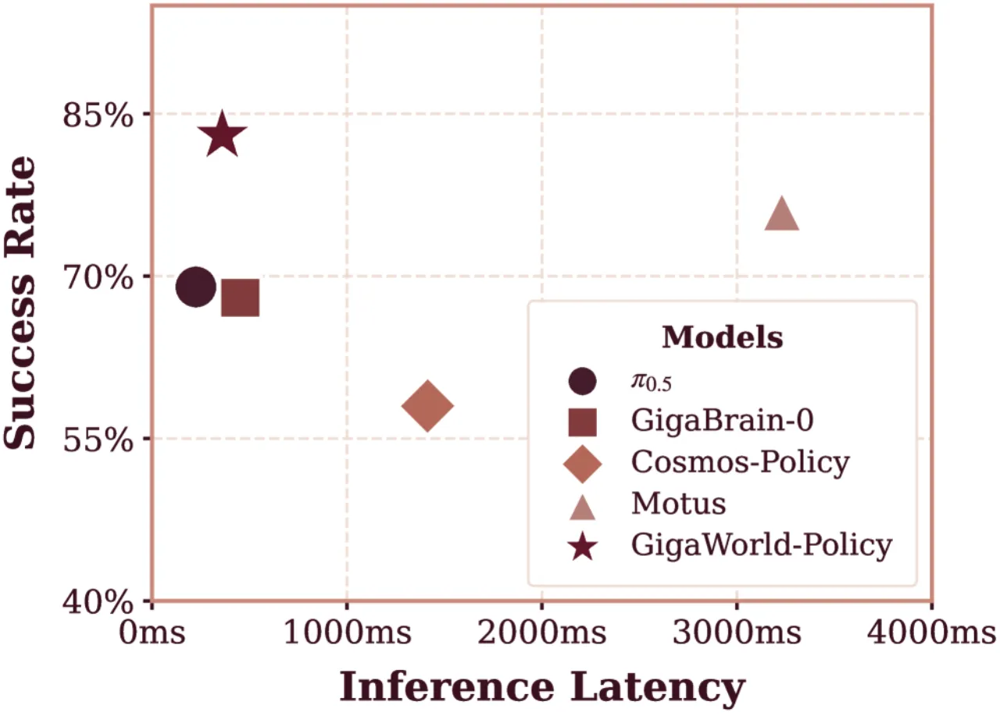
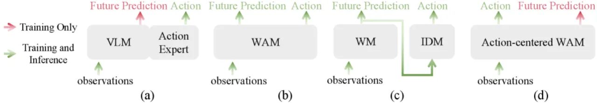
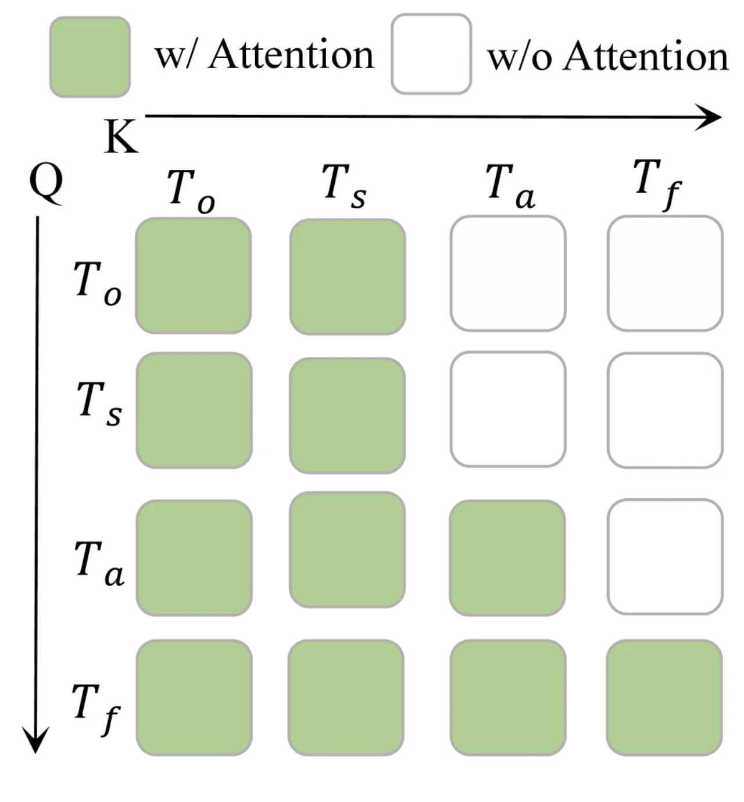
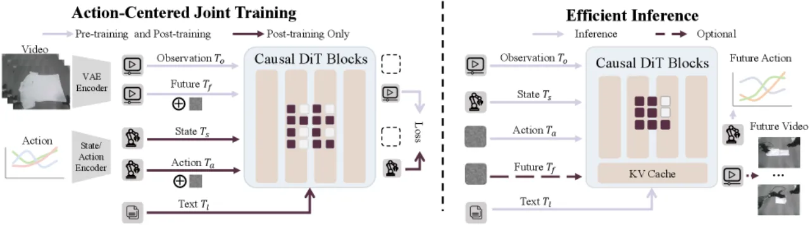
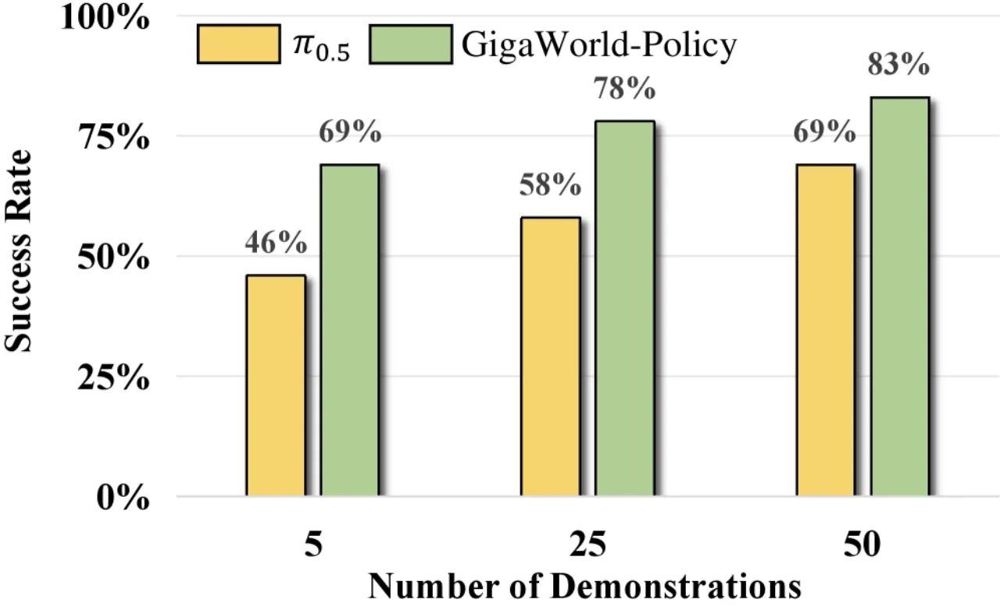

GigaWorld-Policy 提出了一种以动作为中心的世界-动作模型框架：在预测动作序列的同时，将未来视频生成作为可选的辅助监督信号。通过因果注意力掩码设计，完全避免视频 token 对动作 token 的信息泄露，从而在不依赖显式视频合成的情况下实现快速部署与高质量策略学习。
现有世界-动作模型（World-Action Models）在推理时面临两大核心瓶颈： 一是推理开销过大——联合推断未来视觉动态与动作序列导致延迟极高； 二是表征耦合问题——动作预测质量与视频预测质量强绑定，一旦视频生成出错，动作也随之降级。 此外，基于 VLM 的 VLA 方法存在"监督稀疏"（supervision sparsity）问题：动作标签相对于高维观测过于稀疏，容易使模型将不同场景压缩为重复行为，而非学习有物理意义的动作。
"jointly reasoning over future visual dynamics and corresponding actions incurs substantial inference overhead" ——论文对当前世界-动作模型推理瓶颈的直接概括

GigaWorld-Policy 以 5B 参数量的 diffusion Transformer 为骨干，将策略学习形式化为两个耦合组件： 从当前观测预测动作序列（主任务），同时以预测动作为条件生成未来视频（辅助任务）。 核心创新在于因果注意力掩码（causal attention mask）——它确保未来视频 token 的信息 绝对不会回流至动作 token，从而消除视觉-运动表征的纠缠，同时为动作学习提供更稠密的监督信号。

模型采用分块因果依赖设计（blockwise causal dependency）：动作 token 仅能 attend 到状态和观测 token， 而未来视频 token 可以 attend 到动作 token，但反向路径被彻底切断。 这一设计使得推理时可以只解码动作分支，完全不实例化视频 token，从而实现低延迟控制； 训练时视频分支则作为辅助损失，为动作头提供更丰富的梯度信号。 动作与视频均采用 flow-matching 目标函数（Equations 8–10）进行联合训练。

模型采用渐进式预训练策略：

系统接收多视角 RGB 输入（Multi-view RGB），按 Equation 4 将其拼合为单张图像后送入共享 Transformer 块， 与状态 token、动作 token、视频 token 一并处理。这种统一 token 化设计简化了模型结构， 避免了针对不同模态引入独立编码器。
实验在两个场景下评估 GigaWorld-Policy： (1) 仿真——RoboTwin 2.0 基准，50 个任务，分 clean（标准环境）和 randomized（随机初始状态）两种设置； (2) 真实世界——AgileX PiPER 6 自由度机械臂，每个任务执行 20 次试验，涉及 QR 码扫描、垃圾清扫、碗叠放、桌面清洁等任务。 基线方法包括：π₀.₅、X-VLA、Motus、GigaBrain-0、Cosmos-Policy。
| 方法 | Clean SR | Randomized SR | 推理延迟 (A100) |
|---|---|---|---|
| π₀.₅ | 0.43 | 0.44 | 225ms |
| X-VLA | 0.73 | 0.73 | — |
| Motus | 0.89 | 0.87 | 3231ms |
| GigaBrain-0 | — | — | 452ms |
| GigaWorld-Policy（本文） | 0.86 | 0.85 | 360ms |
注：Motus 在仿真成功率上略高（0.89 vs 0.86），但推理延迟达 3231ms，为 GigaWorld-Policy（360ms）的 9×；π₀.₅ 延迟最低（225ms），但成功率仅 0.43/0.44。
| 方法 | 平均成功率 |
|---|---|
| Cosmos-Policy | 0.58 |
| GigaBrain-0 | 0.68 |
| π₀.₅ | 0.69 |
| Motus | 0.76 |
| GigaWorld-Policy（本文） | 0.83 |
在训练数据量实验中，GigaWorld-Policy 仅使用 10% 的训练数据即可达到 VLA 基线方法的最优成功率， 展现出显著更强的样本效率。

预训练策略对最终真实世界成功率的影响（消融实验，真实机器人测试）：
| 配置 | 成功率（SR） |
|---|---|
| 无预训练（from scratch） | 0.45 |
| 仅视频基础模型初始化 | 0.57 |
| 仅具身数据预训练 | 0.73 |
| 完整三阶段预训练（full） | 0.83 |
未来帧间距（frame spacing）的消融实验表明，Δ=12 时性能最优（SR = 0.83）。 具身预训练数据量实验显示，随着具身数据比例从 0% 增至 100%，模型性能单调提升（图8）， 验证了大规模具身预训练对下游策略学习的持续正收益。
模型 Stage 2 需要约 10,000 小时机器人与第一人称演示数据（Agibot、RDT、RoboMind、ATARA、EgoDex、Ego4D）。 对于数据采集成本较高的新场景或新型机器人，完整三阶段预训练流程的复现难度较大。
真实世界实验仅在 AgileX PiPER 6-DoF 机械臂上进行，且限于桌面操作类任务（QR 码扫描、垃圾清扫、碗叠放、桌面清洁）。 跨机器人形态（如双臂、移动操作）的泛化能力尚未验证。
各具体任务均需要针对性的 Stage 3 后训练（task-specific post-training），而非真正的零样本迁移或少样本适应。 在新任务上直接部署时，需要收集并标注新的轨迹数据。
消融实验主要针对预训练阶段的配置，对"是否使用视频辅助损失"这一核心设计选择的独立消融结果在论文中未被单独列出， 难以精确量化视频生成分支对最终策略性能的边际贡献。